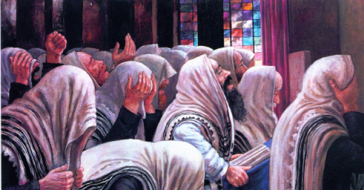

ראה וחטוף
לקט סיפורים קצרים, פתגמים ואמרות על מהותם של ימי ראש השנה
לקט סיפורים קצרים, פתגמים ואמרות על מהותם של ימי ראש השנה
ראה וחטוף
הרבי הרש”ב היה מזהיר שבראש השנה, ביחוד, יבקשו ויעוררו רחמי שמים, מתוך בכייה והתעוררות פנימית, לתיקון המידות ולהנהגה במידות חסידיות.
“פעם”, סיפר הרבי הריי”צ, “נכנסתי אל אבי ביום שני של ראש השנה בערב לפני המאמר (היה זה מהזמנים הקבועים שהייתי נכנס אליו) ואז אמר לי אבי: ‘ראה וחטוף, נשארו עוד עשרים ושניים רגעים עד לשקיעה’.
“באותה הזדמנות יצא מאוחר לאמירת המאמר”.
אנחה יהודית
אדמו”ר מהר”ש אמר:
“כשיהודי נאנח או בוכה בראש השנה על כך שלא טוב לו בגשמיות, בבריאות או בפרנסה – זהו תשובה עילאה” (עליונה, משובחת).
תהילים ודמעות
סיפר הרבי ה”צמח-צדק” בערב ראש השנה:
“פעם נפגשתי עם חיילים יהודים, שסיפרו לי שהם נוהגים לומר מזמורי תהילים בעת צחצוח הכפתורים. כפתורים מצחצחים בחול ובמים. חול – זהו אותיות התהילים. מים – דמעות מכבסות. על כל אחד לנקות את עצמו באמצעות אמירת תהילים בדמעות מעומק הלב, ויחד עם זאת מתוך שמחת הנפש”.
(ספר-השיחות תש”ה)
שעה אחת
מובא בספר הזוהר, שעבודת התשובה היא בשעה אחת וברגע אחד.
לפי זה יש לפרש את דברי המשנה במסכת אבות “יפה שעה אחת בתשובה כו’”, שהכוונה היא לפנייה אחת (= איין קער) של תשובה (שעה מלשון “ואל קין ואל מנחתו לא שעה”).
(ספר-השיחות תש”נ)
בדיקות אומן
כשאומן צריך לתקן כלי, הרי בתחילה צריך לבדוק אותו ולדעת איזה חלק ואיבר צריך להסיר לגמרי ולהחליפו בחדש, ואיזה איבר צריך תיקון. ויש איברים שאינם צריכים תיקון כלל, רק ניקיון וכיבוס בלבד.
כן הוא בעבודה הרוחנית – קודם שמתחילים בעבודה לתקן עצמו צריכים להתבונן היטב במעמדו ומצבו ולעשות חשבון-צדק בנפשו, בלי שום התנצלות והיפוך בזכות עצמו…
(ד”ה “אני לדודי” ש”ת)
לב טהור ולבוש נקי
בערב ראש השנה צריכים להתכונן לקבל את אבינו מלכנו. אבא אוהב לב טהור; מלך אוהב לבוש נקי.
העבודה בראש השנה היא לטהר את הלב ולנקות את הלבושים.
(ספר השיחות תש”ה)
מהי עיקר העבודה?
עיקר עבודת ראש השנה היא קבלת עול מלכות שמיים. לכן, עבודת היום, גם אצל אנשים גדולים ובעלי-צורה, היא בעבודה הנראית פשוטה – אמירת תהילים, מיעוט שינה, זהירות גדולה מדברים בטלים, כעבד העסוק בשמחת קבלת פני אביו, אשר במשך שנה תמימה לא ראה אותו.
(אגרות קודש אדמו”ר הריי”צ)
הכול מזכיר שיש לעשות תשובה
שנה אחת, בימי אלול, יצא אדמו”ר הרש”ב עם בנו הריי”צ אל מחוץ לעיר.
בשלב מסוים אמר הרבי לבנו:
“הטיול הוא מנוחת הנפש. היכן שהעין פונה, ניבטת הרחמנות השפוכה על הבריאה. השדות והאילנות – יבשים. פה ושם יש שדות שדופים. הבריאה כולה עורגת וכמהה ל’חיות’ חדשה. הכול מזכיר שיש לעשות תשובה, שצריך האדם להכין את עצמו לבקשת סליחה ומחילה, לקראת הכתרתו של מלך מלכי-המלכים הקב”ה.

אינו דומה הדין והמשפט של ראש-השנה לדין ומשפט ששופטים את האדם לאחר מאה ועשרים שנה. בעולם האמת כבר אי-אפשר לעשות תשובה, אך במשפט של ראש-השנה מועילה תשובה, וידו של הקב”ה פשוטה ביום זה לקבל שבים.
(ספר המאמרים קונטרסים)
נושא עוון ועובר על פשע
“מי אל כמוך, נושא עוון ועובר על פשע”. כאשר הקב”ה “נושא עוון” – שנושא ומעלה את העוון ומוכיח עליו את החוטא, אות וסימן הוא שהוא “עובר על פשע” – שרוצה לעבור ולכפר על הפשע.
למה הדבר דומה? לשניים שרבו ביניהם, וכשבאים להתפייס מוכיח כל אחד את חברו, כדי לברר מי חטא למי. אולם אם אין רצונם להתפייס, אין האחד “נושא עוונו” של חברו, להוכיחו על מה שחטא לו.
(כתר-שם-טוב)
כלי פשוט
מצוות היום של ראש-השנה – תקיעת שופר, אין כוונתה להשתמש בלהקת כלי-זמר, אלא בכלי אחד ויחיד, ואף זה – לא כלי-נגן משוכלל המשמיע יצירות מוסיקליות נפלאות, אלא קרן פשוטה של בהמה, ו”כל הקולות כשרין בשופר”.
מכאן, ששימת-הלב צריכה להיות בראש ובראשונה על היחיד, על האדם עצמו, עם דגש על הכנסת קדושה ורוחניות גם לדברים פשוטים ורגילים שבחיי היום-יום.
(ליקוטי שיחות)
איך מיישמים את ה”שופר גדול”?
על-פי הידוע שבמקום שמחשבתו של אדם שם הוא נמצא – הנה מאחר שבשעת תקיעת שופר מחשבתו היא אודות שמיעת ה”שופר גדול” (כפי שמבטא זאת באמרו את הפסוק “יתקע בשופר גדול”), הרי מובן שהוא שומע את קול השופר ששם נמצאת מחשבתו – “שופר גדול” שיהיה בגאולה העתידה.
כדי לפעול שהעניין ד”שופר גדול” יהיה גם במעשה בפועל, שהמעשה הוא העיקר – מובן שצריכים להוסיף בכל הפעולות שעניינם להחיש, לזרז ולהקדים את כללות הגילויים דלעתיד לבוא, שאז יקויים היעוד “והיה ביום ההוא יתקע בשופר גדול” כפשוטו…
(משיחת יום ב’ דראש השנה תשמ”ב)
בשנה הראשונה
בראש השנה תרפ”א, השנה הראשונה לאחר פטירת אדמו”ר הרש”ב והראשונה לנשיאות בנו הריי”צ, סירב הרבי הריי”צ לתקוע בשופר, כפי שאביו היה נוהג.
אולם אמו הרבנית שטערנא שרה הפצירה בו מאוד, באמרה כי היא רוצה לשמוע תקיעת שופר דווקא ממנו. הרבי הריי”צ בירך אפוא את הברכות שלפני התקיעות, תקע תקיעה אחת ומסר את השופר לאחד החסידים כדי שיסיים את סדר התקיעות. כך גם שמר על רצונו וגם יצא ידי חובת כיבוד אם.
(ימי בראשית)
עבודת הלב בתשר”ק
נתבאר בחסידות עניינם של שלושת קולות השופר בעבודת האדם:
תקיעה – על האדם לתקוע את עצמו בעבודת ה’ בחוזק.
שברים – עליו לשבור את ליבו כשיזכור את חטאיו ופשעיו, בחינת “לב נשבר”.
תרועה – מלשון “תרועם בשבט ברזל”; לשבור את החתיכות הגדולות לשברי-שברים קטנים.
ויש להוסיף: השבירה לחתיכות גדולות היא העברת וביטול הרע הגס שבנפש. השבירה לחתיכות קטנות היא ביטולו של הרע הדק, שהוא קשה אף יותר.
(מהתוועדות פרשת בלק תשמ”ג)
ציור: זלמן קליינמןפ”נים בתקיעות
הרבי נוהג לתקוע בעצמו בשופר. בעת התקיעות מונחים לפניו על שולחן הקריאה חבילות גדולות, ובהן מונחים כנראה חלק הפ”נים שנתקבלו לפני החג.
צעקו בכל עוצם נפשם
הבעל שם טוב היה נוהג לתקוע בשופר במעמד תלמידיו.
פעם אחת ביקש מתלמידו הגדול בעל ה’תולדות’ לתקוע אצל התלמידים, והוא עצמו תקע לפני אנשים פשוטים וילדים, שצעקו בכל עוצם נפשם:
“אבינו שבשמים, רחם-נא!” וזה פעל יותר מכול כדי לבטל את ה’דינים’.
(ספר השיחות תש”ה)
פיוטי ‘המלך’
סח כ”ק אדמו”ר הריי”צ נ”ע:
“יש לייקר כל פיסת פיוט שבו נזכר “המלך”, שכן בראש השנה נמשך כתר מלכות”.
(משיחת יום שמחת-תורה תרצ”ט)
התקשרות והתאחדות
מה בין הכתרת המלך להשתחוויה לפני המלך?
הכתרה מורה על ביטול האדם לציווי המלך, בכל אשר יצווה (ה”גילויים” שלו); השתחוויה מורה על ביטולו של עצם האדם לעצם המלך. הכתרה – התקשרות. השתחויה – התאחדות.
(ספר השיחות תש”ה)
ברצון ובשמחה
אמנם קבלת מלכותו של הקב”ה בראש השנה היא קבלת-עול, אבל האופן שצריך לקבל את המלכות הוא דווקא בשמחה. כלומר, יהודי צריך להרגיש שהעול אינו עליו למשא. וכפי שהיה בעת קריעת ים-סוף, שבני-ישראל קיבלו עליהם עול מלכות שמים מתוך שירה ושמחה, באמרם “ה’ ימלוך לעולם ועד”, וכפי שאנו אומרים בתפילה: “המעביר בניו בין גזרי ים-סוף… ומלכותו ברצון קיבלו עליהם”.
בכל ראש-השנה יש לקבל עול מלכות שמים מחדש, ברצון נעלה יותר, שכן יש רצון ויש רצון.
(יהל אור)
קבלת עול
קבלת עול מלכות שמים שיש בכל יום, במיוחד בעת ‘קריאת-שמע’, היא רק בבחינת התחלה ויסוד להתנהגותו של האדם במשך היום. אולם קבלת עול מלכות שמים של ראש-השנה היא מהותו ותוכנו של כל היום.
(ליקוטי שיחות)
שמחה מכוסה
הכתרת הקב”ה למלך גורמת לאדם שמחה גדולה, שהרי אין לך שמחה גדולה מזו שהקב”ה מקבל את המלוכה. אלא שהשמחה עודנה מכוסה ונעלמת, והיא מתגלית רק בחג הסוכות. וכמבואר בחסידות על הפסוק “בכסה ליום חגנו” – שהדברים שהם בהעלם בראש-השנה, מתגלים בחג הסוכות. (רמז לדבר – היום הראשון של ראש-השנה יחול לעולם באותו יום בשבוע שבו יחול חג הסוכות).
כך גם בעת הכתרתו של מלך בשר-ודם, שההכתרה וסעודת ההכתרה מתקיימות בשני זמנים שונים. בעת ההכתרה מעטרים את המלך בכתר מלכות, משתחווים לו, ומקבלים את עול מלכותו, ואז אין הזמן ראוי לעריכת משתה ושמחה. רק לאחר מכן, במועד אחר, עורכים את סעודת ההכתרה מתוך שמחה גדולה וגלויה.
(שיחת ליל א’ דחג הסוכות תשמ”ה)
כשבאים לד’ אמותיו…
ישנם כאלו שבאים לקראת ראש-השנה לד’ אמותיו של נשיא דורנו, ובפרט שבמקום זה שהה כ”ק מו”ח אדמו”ר נשיא דורנו ועסק בתורה עבודה וגמילות חסדים במשך עשר שנים בחיים חיותו בעלמא דין.
ולכן, כאשר מתאספים כולם יחד במקום זה, ומתפללים ולומדים דברי תורה וכו’ – הרי זה חלק מכללות מעשינו ועבודתנו הפועלים את הגאולה האמיתית והשלימה.
(התוועדות יום ב’ דראש השנה תשמ”ב)
ראש מתוק של השנה
סח כ”ק אדמו”ר הזקן:
“כשלומדים ומתפללים בכוונה, במשך ששת ימי השבוע, השבת היא נעימה.
“כשעוברים את חודש אלול וימי הסליחות כמו שצריך, אזי ערב ראש השנה – ראש מתוק של השנה”.
הכרח שתהא כתיבה וחתימה טובה
ידוע פתגמו של הרה”צ רבי לוי-יצחק מברדיצ’וב על הכתיבה והחתימה בראש-השנה, שהואיל ובראש-השנה ויום-הכיפורים אסור לכתוב, הרי אם הכתיבה היא לטוב – ישנו ה’היתר’ של פיקוח-נפש, אך אם לא – אסור הדבר.
ממילא, בהכרח שתהא כתיבה וחתימה טובה. הכתיבה והחתימה טובה מתחילת היום, שעל-ידי הכנה ואתערותא דלתתא במשך ארבעים יום ממשיכים את האתערותא דלעילא, שתהא כתיבה וחתימה טובה, בספרם של צדיקים לאלתר לחיים טובים
(שיחת כ”ף מנחם אב תשי”ד)
“אשרי העם”
זקני חסידי חב”ד בליאזני עדיין זכרו את כ”ק אדמו”ר הזקן שעה שבא אליהם בפעם הראשונה ממעזריטש. באותה עת חזר הרבי אז על דברי תורה שאמר הבעל-שם-טוב הקדוש, כפי ששמע מהרב המגיד ממעזריטש:
“אשרי העם יודעי תרועה” – אשרי שבח והודיה לה’ יתברך, אשר כל עם ישראל בלי הבדל גאוני תורה או יהודי של מדרש, יהודי של ‘עין יעקב’ או יהודי של תהלים – כולם יודעים תרועת מלחמה עם הנפש הבהמית ויש להם רגש פנימי להמשכות של הנפש האלקית.
“ואם כעבדים”
באחת השנים, אחר תפילת ראש השנה, אמר כ”ק אדמו”ר ה”צמח צדק”:
אנו אומרים בתפילת היום “אם כבנים רחמנו כרחם אב על בנים, ואם כעבדים עינינו לך תלויות”. נשאלת השאלה: הרי היה מתאים יותר לומר להיפך – “אם כבנים, עינינו לך תלויות, ואם כעבדים רחמנו”?
אלא שאמרו חז”ל “כל הקונה עבד עברי כאילו קונה אדון לעצמו”, ולכן “אם כעבדים” – בטוחים אנו ש”תחננו”.
(שמועות וסיפורים)